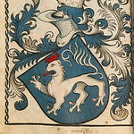

2044012378 Greve Lambert II von Gleichen-Tonna
Greve av Gleichen och Greve av Tonna. Blev ca 37 år.

Far:
Född:
omkring 1190 Thyringen, Vorarlberg, Österrike. [1]
Död:
1227 Gleichen, Lower Saxony, Tyskland. [1]
Barn:
Personhistoria
1190?
Födelse omkring 1190 Thyringen, Vorarlberg, Österrike
[1]
1227
Död 1227 Gleichen, Lower Saxony, Tyskland
[1]
Källor
[1]
Skeel, Schaffalitzky og Ahlefeldt